Differentiable physics, part 2: a simple structural model of demand and solar
A simple model of demand minus solar forecasts better than lagless XGBoost on 12 months of history, but more years of history do not clearly help it. This is part 2 of a six-part series on models built from physical terms (a daily profile, holidays, heating, and solar output) and fitted by gradient-based optimisation; part 3 pools the model across substations. Trained on 12 months, the model scored 0.25 points better than lagless XGBoost with its default start (post hoc; a lower score is better). Only the contrasts C1 to C3 were pre-registered; the others below are exploratory. The arm names (G1, G-all, G-all+D1, X-12, and so on) are defined in the first Results bullet. Trained on all usable years with no drift, the model scored 0.25 points worse than on 12 months in the scored year (exploratory; +0.03 without D16, and the reverse in the tuning year), and a drift term recovered that. The planned comparison C1, all years with drift against 12 months, gave 0.04 points better, with an interval from 0.30 better to 0.21 worse, and 2 of the 5 decision substations improved.
The verdict is inconclusive. The interval of C1 spans zero, and four of the five
pre-registered positive controls fail. The framework tests, which the plan names as the fifth
control, pass. The four that fail are these: old years without drift hurt by less than predicted
(+0.25 against +0.3 to +0.8); the solar offset gains nothing once irradiance is an input; the zero
start scores worse than the default start; and the baselines are not worse than every arm. On C1
alone, the merged rule for the first scoring pass would give partly supported.
The result narrows the long-history question to "all years need a drift to be level with 12 months in the scored year, and the data cannot yet say whether they gain". In this page, "history-window contrasts" means all years against 12 months, and drift against no drift. By substation the planned comparison is mixed: D14 (-0.51) and D11 (-0.22) improve, and D10 (+0.41), D5 (+0.11), and D16 (+0.03) worsen.
The model was fitted once per Primary substation on data to 30 June 2025 and scored on the next 12 months. We fitted the model, one convex optimisation (a problem with a single best answer) per Primary substation, on data to 30 June 2025, held the fit fixed, and scored the model on every half-hour from 1 July 2025 to 30 June 2026. The score is twice the mean pinball loss (an error measure for quantile forecasts) over 11 quantile levels, in points of effective capacity (1% of the substation's effective capacity, the scale every experiment divides power by). The five decision substations are D5, D10, D11, D14, and D16; D9 has 9.0 months of history at 2024-07-01 (experiment 103's row table) and is reported beside them. ERA5 (a reanalysis) and CAMS (a satellite-based irradiance product) supply temperature and irradiance; both are estimates of past weather.
Correction (2026-10-19)
The first version of this page reported the opposite sign for two history-window contrasts (all
years against 12 months, and drift against no drift), because the forecast spread carried last
year's mean bias into the scored year. An audit found no bug in the fits. The fault was in the
design of the spread: each quantile was the fitted mean plus the raw quantiles of the residuals of a
replica fitted 12 months earlier, and the raw quantiles carry that replica year's mean bias, which
shifted every quantile of the scored year by the same amount. The shift of the median forecast from
the mean forecast ranged from -21.3 points (D9, G-all+D1+steps) to +3.6 points (D11, G-all+D1), and
fully explains D9's former scores of 6.39 and 15.67. The spread is now centred: each (hour band,
calendar quarter) group's median is subtracted from its quantiles
(ResidualSpread.fit(centre=True), with a test that fails if the quantiles are not centred). The
fits, the penalties, and the XGBoost arms are unchanged. The first run's sets stay in the store
under their original names (g1, g_all, and so on) as the uncentred arm; the corrected sets are
g1_centred and so on. report_uncentred_first_run.txt holds the first run's report, and
E104_SPREAD=uncentred makes e00104_report.py reproduce it.
| Quantity (five decision substations) | First run (uncentred) | Corrected (centred) |
|---|---|---|
| G-all minus G1 | -0.40 (-0.66 to -0.15) | +0.25 (+0.08 to +0.40) |
| C1: G-all+D1 minus G1 (98.33%) | -0.20 (-0.68 to +0.22) | -0.04 (-0.30 to +0.21) |
| G-all+D1 minus G-all | +0.20 (-0.05 to +0.43) | -0.29 (-0.37 to -0.21) |
| C2: G1 minus X-12am (98.33%) | -0.24 (-0.80 to +0.24) | -0.55 (-1.13 to -0.11) |
| C3: G-all+D1 minus X-allam (98.33%) | -0.29 (-0.67 to +0.03) | -0.43 (-0.75 to -0.15) |
| G-all minus X-12 | -0.34 (-0.66 to -0.07) | +0.00 (-0.40 to +0.34) |
| Absolute: G1, G-all, G-all+D1 | 3.13, 2.73, 2.92 | 2.82, 3.07, 2.78 |
| D9, G-all+D1 and G-all+D1+steps | 6.39, 15.67 | 2.31, 2.63 |
- What changed in the conclusions. More years without drift now hurt, in the direction the positive control predicted but below its predicted size of +0.3 to +0.8, where the first run said they helped by 0.40. C1 kept its sign and shrank from -0.20 to -0.04. Drift now helps the score in every month of the scored year (-0.07 to -0.51), where the first run said it lost most in August to October. The convex model's lead over XGBoost with the zero-start benchmarks is larger (C2 -0.55, C3 -0.43), and G-all is level with X-12, not 0.34 better.
- The bias as its own result. Uncentred minus centred, five-site score: G1 +0.30, G-all -0.35, G-all+D1 +0.14, G-all+D1+steps +0.13 (report section 12). The replica year's bias helped one arm and hurt three, and the sign differed between substations, so it was a shift by chance, not a usable correction. Whether the replica year's bias predicts the scored year's bias was not tested beyond these four arms.
- What did not change. The zero-start result (+0.30), the solar offset with irradiance (+0.006), the lagged reference, the cold block, the capacities, and the GPU benchmark are unaffected, because they do not use the spread. The tails are not fixed by centring: G-all+D1 covers 2.5%, 6.9%, 89.5%, and 96.2% at the 1%, 5%, 95%, and 99% quantiles, and pooled coverage hides opposite errors between substations.
- D10's unlabelled jumps. The audit reported 15 to 20 point jumps in D10's power from about 8 November 2024 and about 1 November 2025, probably unlabelled switching. We found the first on 8 November 2024 (the night-time floor rises from 25 to 45 points and stays high to about 1 December), inside the training data, which this correction does not remove from any fit. We found the second as a rise of 15 to 20 points in D10's residuals from 17 November to 14 December 2025, not on 1 November. With those 28 days dropped at D10 only (1,344 of 17,401 rows), D10's scores fall by 0.09 to 0.53 (G1 3.19 to 3.04, G-all+D1 3.60 to 3.44, X-12am 3.90 to 3.37), and the five-site contrasts move by under 0.08 (report section 13): G-all minus G1 +0.24, C1 -0.05, G-all+D1 minus G-all -0.29, C2 -0.47, C3 -0.41, G-all minus X-12 +0.05. No conclusion changes.
What the model learns
The mean forecast is the sum of seven pieces, each a block of the design matrix times its fitted coefficients. The figures split the fitted G-all+D1 model (final cut 2025-07-01, centred spread, which plays no part in a mean) at three decision substations, D10, D11, and D14, in points of effective capacity. The pieces add up to the model's mean forecast (checked in the script to 1e-6 points). The steps panel comes from the steps arm and is not zero: its cumulative steps reach +20 points at D10 and -10 points at D11 over the training years.
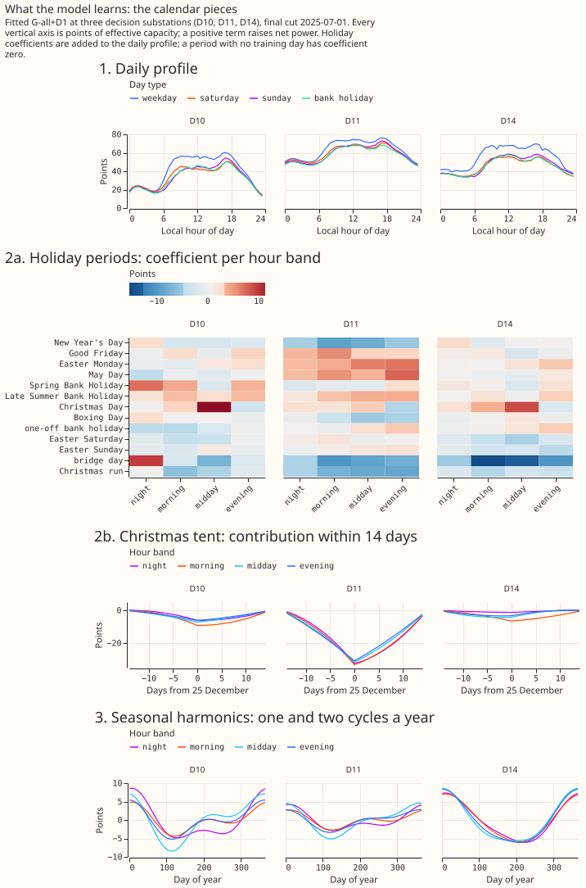
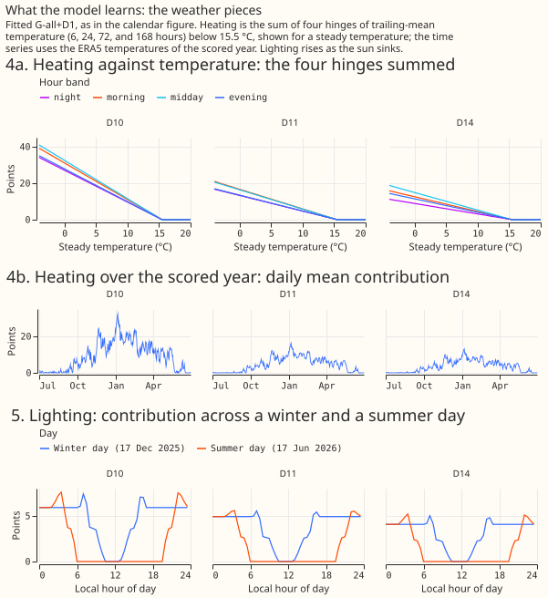
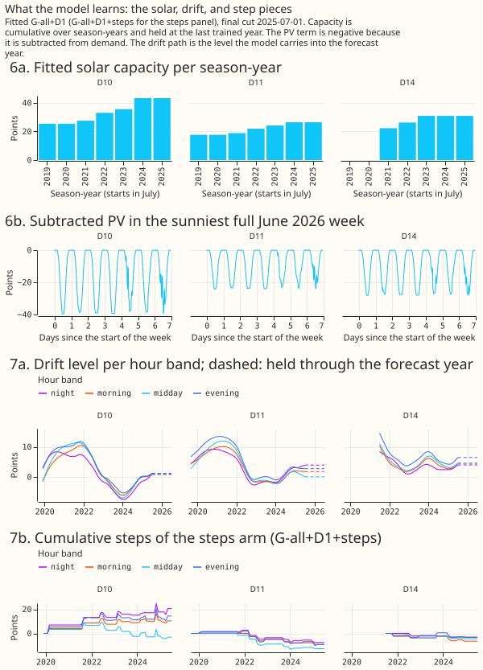
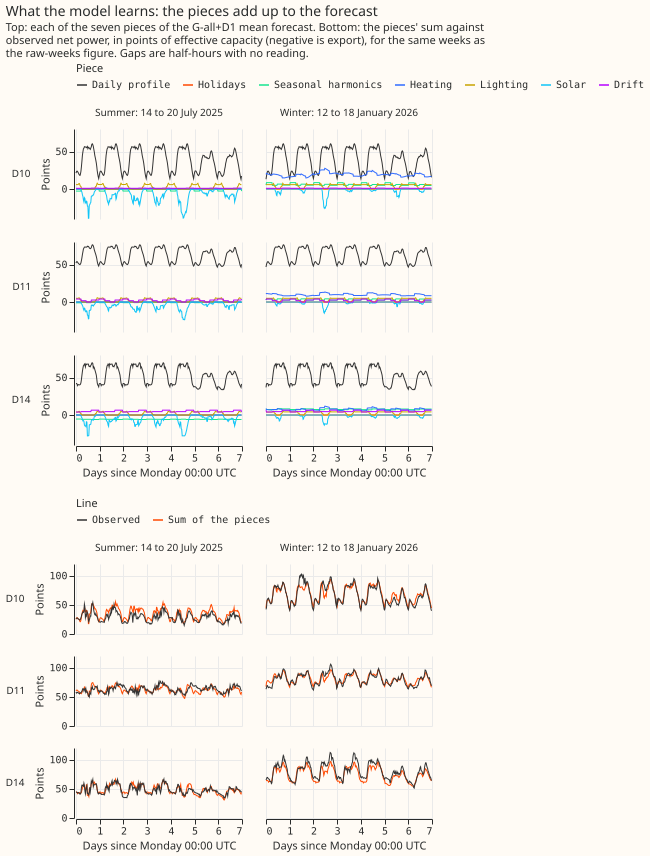
Figures
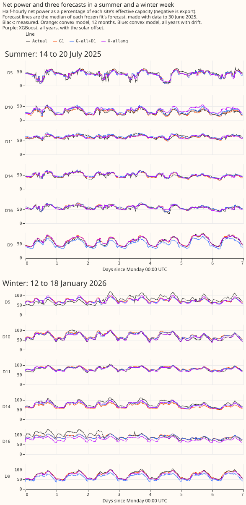
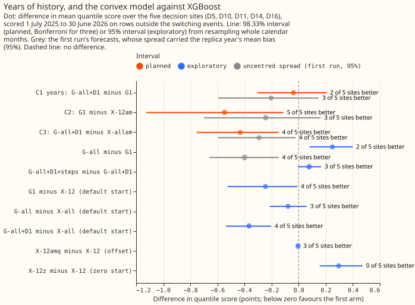
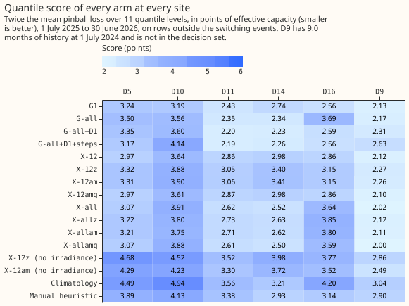
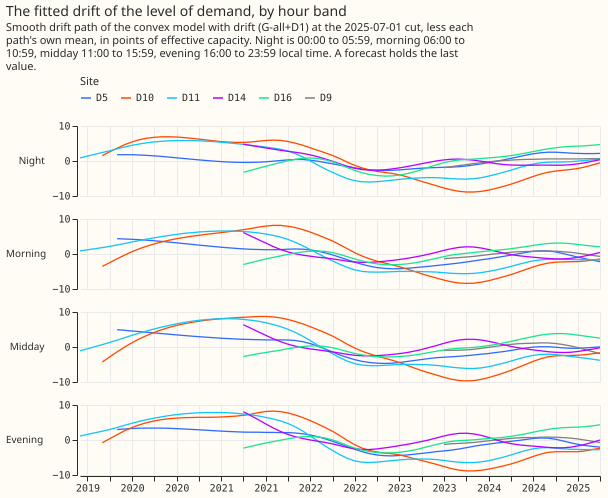
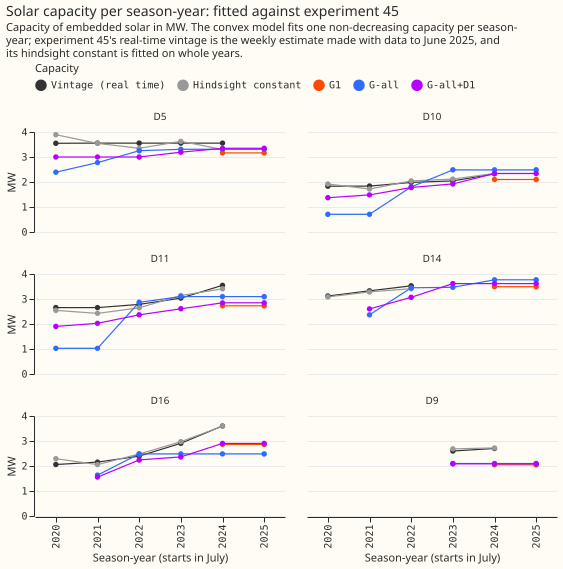
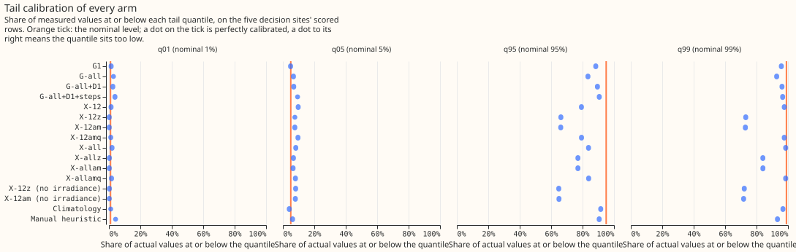
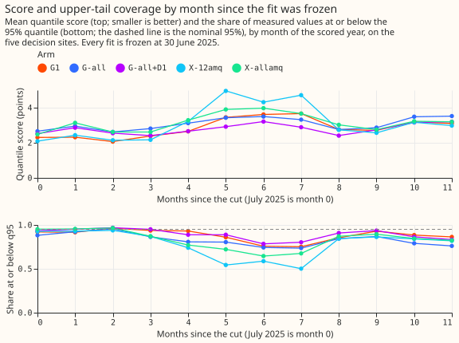
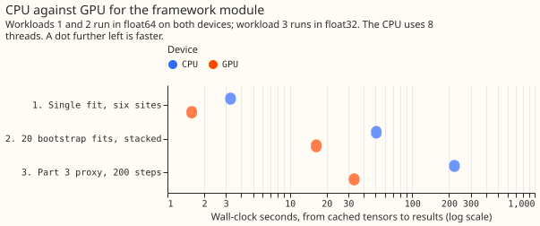
Checks
- Median minus mean forecast, per site. Zero at every site in the centred sets. In the first run's uncentred sets the mean shift of the median forecast, on all rows, was G1 +1.8, +3.1, -1.7, +2.3, +2.2, and +1.2 points at D10, D11, D14, D16, D5, and D9 (report section 12).
- Error of the mean or median forecast beside each contrast (report section 14; mean absolute error of the GAM mean and of the XGBoost median, five sites). G1 4.93, G-all 5.24, G-all+D1 4.85, steps 4.95; X-12 5.01. G-all minus G1 +0.31 (+0.01 to +0.56); C1 -0.08 (-0.46 to +0.28); G-all+D1 minus G-all -0.38 (-0.52 to -0.25); C3 -0.43 (-0.73 to -0.16). All four agree in sign with the quantile score.
- C2's lead lies mostly in the tails and the spread, not the centre. C2, G1 minus X-12am, is -0.08 (-0.40 to +0.20) on the error of the mean forecast against -0.55 on the quantile score.
- Leaving one decision site out (report section 14). C1 changes sign without D14: -0.04 with all five sites, +0.08 without D14 and +0.01 without D11, and between -0.16 and -0.06 without D5, D10, or D16. C2 and C3 stay between -0.65 and -0.24 whichever site is left out. G-all minus G1 stays positive, between +0.03 (without D16) and +0.42 (without D14). G-all+D1 minus G-all stays negative, between -0.38 and -0.09.
- Audit triggers. The seven triggers are those of the "Audit before merge" rule in the
ml-experimentskill, and each is defined below with whether it fired.- Trigger 1, a control fails: fired. Four positive controls fail. The audit of the spread
(private brief
e104_audit.md) found no code bug in the zero-start, solar-offset, or tail results. It found that zero start overfits (better in training; the 99% quantile covered 73% against 98% in the scored year, report section 5; experiment 80's -0.04 came from lagged, weekly-retrained models) and that the solar offset adds nothing once CAMS irradiance is an input. - Trigger 2, a result contradicts its prediction or an earlier finding without a tested explanation: fired, for the same two results, with the explanations above, and for the corrected history-window contrasts.
- Trigger 3, the quantile score and the error of the mean forecast point in different directions: did not fire.
- Trigger 4, leaving one site out flips a planned contrast: fired. C1 changes sign without D14, from D14's winter against D10's summer (see the section below; the second audit found no data or switching fault at D14).
- Trigger 5, a nested arm beats the arm that contains it: fired. G1, trained on less data, beats G-all by 0.25 (the audit found no leak, and drift recovers the gap), and steps do not beat D1 (+0.08, interval spanning zero).
- Trigger 6, a headline interval twice as wide or half as wide as in a sister experiment: did not fire. No sister experiment scores these rows.
- Trigger 7, a later experiment depends on the unreplicated headline: fired. Later parts of the series use G-all+D1 as the reference and D1 plus steps as the default drift.
- Trigger 1, a control fails: fired. Four positive controls fail. The audit of the spread
(private brief
The tuning year as a replicate
The tuning year reverses two of the three history-window contrasts, so a one-year contrast between history windows is not yet a finding. The three are G-all minus G1, C1, and the drift contrast. This replicate is post hoc: a second audit added it after the first results. The audit refitted the four convex arms at the 2024-07-01 cut with the same penalties and scored them on the tuning year, 2024-07 to 2025-06, on the mean absolute error of the mean forecast (five sites), so the spread plays no part. No intervals were computed for the tuning-year column, and the steps row is in-sample because the step penalty was chosen on that year.
| Contrast (error of the mean forecast, points) | Tuning year 2024-25 | Scored year 2025-26 |
|---|---|---|
| G-all minus G1 | -0.25 (4 of 5 better) | +0.31 |
| C1: G-all+D1 minus G1 | -0.20 (3 of 5 better) | -0.08 |
| G-all+D1 minus G-all (drift) | +0.06 | -0.38 |
| G-all+D1+steps minus G-all+D1 | -0.22 (in-sample) | +0.10 |
- Two contrasts reverse between years and only C1 keeps its sign. G-all minus G1 and the drift contrast reverse. C1 favours all years with drift in both years.
- C1's sign rests on one site's winter against another site's summer. On the quantile score (not the error of the mean forecast), C1 is -0.40 in November to March and +0.19 in April to October (-0.19 and +0.25 without D14), and all years with drift beats G1 in winter at 4 of 5 sites in both years. D14's gain (-0.51) is all November to March (-1.17, against -0.04 in other months): G1 under-forecasts the cold weeks of January and February 2026 by 8 to 11 points, and D14's scored winter was 6.8 points higher than its training winter. D10's loss (+0.41) is a summer effect: all years with drift over-forecasts D10's falling summer level by 5 to 8 points (on the quantile score, +0.91 in April to October and -0.30 in winter).
- G-all's scored-year loss to G1 is mostly D16. G-all is biased +3.5 points at D16, whose demand rose every year from 2022, and -1.6 at D10, whose demand fell. Without D16 G-all minus G1 is +0.03.
Results
- Arms. Convex model (G):
G1(12 months, no drift),G-all(all years, no drift),G-all+D1(all years, a drift level per hour band),G-all+D1+steps(D1 plus sparse steps). XGBoost (X) without power lags, same weather inputs, named by window (12months orallyears) and suffix: no suffix is XGBoost's default start,za zero start,ama zero start plus experiment 64's solar offset,amq(post hoc) each quantile starting at its training quantile plus the offset, andng(post hoc) no irradiance input. References: climatology andmanual_heuristic. Penalties were tuned on 2024-07 to 2025-06 by mean absolute error (ridge 0.1, drift step 3,000, step penalty 300). Every fit is frozen at 30 June 2025 with no refits, and uses one seed (the screening tier of the series). The convex arms' quantiles are the fitted mean plus the centred residual quantiles of a replica fit (see Correction); every number below is from the centred sets unless it says "first run". - Absolute scores (points, five decision sites; figure 3 has every site). G1 2.82, G-all 3.07,
G-all+D1 2.78, G-all+D1+steps 2.86; X-12 3.07, X-all 3.15, X-12amq 3.06; climatology 4.07,
manual_heuristic3.49. D9 scores 2.31 (G-all+D1) and 2.63 (steps); its former 6.39 and 15.67 were the uncentred spread's shift. - C1 (the verdict contrast): G-all+D1 minus G1 is -0.04 (98.33% interval, which corrects for three planned contrasts by the Bonferroni method: -0.30 to +0.21; 2 of 5 better). Per site: D14 -0.51, D11 -0.22, D16 +0.03, D5 +0.11, D10 +0.41. With D9 (six sites) it is 0.00 (-0.21 to +0.21).
- C2 and C3 (labels under the merged rule, not a claim of a DP gain). C2, G1 minus X-12am:
-0.55 (-1.13 to -0.11; 5 of 5 better;
supported). C3, G-all+D1 minus X-allam: -0.43 (-0.75 to -0.15; 4 of 5 better, D5 worse;supported). Both compare against zero-start arms, which failed their own control and are the weaker XGBoost benchmark. - Against XGBoost's default start (post hoc, 95%, decision sites). G1 minus X-12: -0.25 (-0.53 to -0.01; 4 of 5 better). G-all minus X-12: +0.00 (-0.40 to +0.34; 3 of 5 better). G-all+D1 minus X-12: -0.28 (-0.74 to +0.09). G-all minus X-all: -0.08 (-0.21 to +0.06). G-all+D1 minus X-all: -0.37 (-0.54 to -0.20; 4 of 5 better). X-all is the weaker benchmark: it is 0.78 worse than X-12 at D16.
- Exploratory (95%). G-all minus G1 +0.25 (+0.08 to +0.40; 2 of 5 better). G-all+D1 minus G-all
-0.29 (-0.37 to -0.21; 4 of 5 better). Steps minus D1 +0.08 (-0.01 to +0.17). X-12z minus X-12
+0.30 (+0.16 to +0.47). X-12am minus X-12z +0.01 (-0.01 to +0.02): with irradiance as an input
the offset adds nothing and the fitted weights
ware -0.02 to -0.34, not -1. Without irradiance X-12am-ng minus X-12z-ng is -0.28 (-0.48 to -0.08), withwfrom -0.53 to -0.71. Coastal D5 and D9: C1 is +0.15 (+0.03 to +0.26, both worse). - Drift by month since the end of the training data. G-all+D1 minus G-all, July 2025 onward: -0.14, -0.09, -0.07, -0.40, -0.46, -0.51, -0.28, -0.44, -0.35, -0.13, -0.33, -0.32 (months 0 to 11). The drift arm is better in every month, and gains most from October to December. The drift step still sits at the edge of its grid (3,000), and D10's residuals rise at the end of the training data, so the last drift knot may still follow the final months of training.
- Lagged reference (descriptive). XGBoost with three power lags minus the same model without: -0.58 (-0.97 to -0.28) at leads of 24.5 to 48 hours and -0.32 (-0.56 to -0.15) at 144.5 to 168 hours, 5 of 5 sites better in both. The lagged model scores 2.49 and 2.75 against 3.07, and so beats G1 (2.82) and G-all+D1 (2.78) at the shorter lead.
- Tails (coverage at the 1%, 5%, 95%, 99% quantiles, five sites). G1 1.4/4.9/88.4/95.8%;
G-all 2.9/6.7/83.4/92.8%; G-all+D1 2.5/6.9/89.5/96.2%; X-12 1.4/9.7/79.3/97.7%; X-12z 0.2/7.6/
66.2/73.1%;
manual_heuristic4.2/6.1/90.6/93.3%. Pinball loss at the same levels: G1 0.177, 0.642, 0.819, 0.256; G-all+D1 0.195, 0.669, 0.772, 0.235; X-12 0.261, 0.716, 1.078, 0.338. The 95% quantile is too low for every arm from November to February, and pooled coverage hides opposite errors between substations (figure 7). No curtailment-cost saving is reported: that metric needs a node with generators, and this experiment scores Primary demand only. - Predictions that held: the plan's framework unit tests (1 to 6) pass; steps within 0.1 points of D1 (+0.08); run time (every arm under 10 minutes).
- Predictions that failed: old years without drift hurt by +0.3 to +0.8 (+0.25: the direction
and the interval above zero held, the size did not); solar offset with irradiance (no gain); zero
start within -0.10 to +0.02 (+0.30); C1 in 0.0 to +0.4 (-0.04); C2 in 0.1 to 0.5 and C3 in 0.0 to
0.5 (-0.55 and -0.43, in the direction that favours the convex model); tails within 1 and 2 points
of nominal (no arm); baselines worse than every arm at every site (14 arm-site pairs fail, listed
in
report.txt). The post-hoc no-irradiance offset gain is in range, butwis outside -1.3 to -0.6 at three sites. Capacities within 20% of the vintages: held at D10, mixed at D11 and D16, and D14 is not comparable. - Capacity. The real-time
frozenvintage (the weekly capacity estimate of experiment 45 made with data to each origin date) is not its hindsight season-year constant; the two differ in every shared week. See data processing. No training row needed a growth-prior scaling, and the cold block has no real-time capacity before 2023-08, so it has noamarm. - Cold block (November 2022 to February 2023, a cold winter scored by fits trained to 31 October 2022; descriptive). Mean absolute error of the central forecast, five sites: G-all+D1 4.15, G-all 6.41, G1 7.66, X-12 7.31 points. The drift term helps most here, probably because it follows the 2022 fall in demand.
- Scarce-data rows (no interval). Bank holidays (1,728 rows): G-all+D1 2.65, G-all 2.97,
manual_heuristic6.05. Days below 0 °C (576 rows): G-all+D1 3.37, G-all 3.40. Christmas run (1,009 rows): X-allam 2.46, G-all+D1 2.68. - GPU benchmark (private file
work/benchmark.json). The pooled proxy ran 6.6 times faster on the GPU (221 s to 33.5 s); 20 stacked bootstrap fits 3.1 times (50.8 s to 16.4 s); one fit on six sites 2.1 times (3.3 s to 1.6 s). CPU and GPU predictions agree to 2e-9 points, and peak GPU memory was 0.87 GB. The two convex workloads run in float64, because the normal equations are too badly conditioned for float32. CPU timings ran while other jobs used the machine. - Handed on. The spread model is the centred replica residual quantiles. The strongest XGBoost
benchmark is the default start (
X-12,X-all), andX-12amqis the matching solar-offset arm. For Part 3, the references for pooling to beat are G-all+D1 (2.78), G1 (2.82), and G-all+D1+steps (2.86), and the tuning year should be scored as a second frozen replicate. For Part 4, the plan's rule gives D1 plus steps as the default drift, because steps lowered the tuning year's error by 0.22 points (over 0.1). That gain was measured on the year the step penalty was chosen on, and steps lost to D1 in the scored year (+0.08, mostly at D10). Part 4 should instead run D1 and D1 plus steps as paired arms, with D1 as the default, and choose the step penalty out of sample.
Substation cards
Provisional: fitted to past weather on a screening run. Each card shows what the G-all+D1 fit says about one decision substation at the final cut 2025-07-01, and the steps panel comes from the steps arm. A card has nine panels. They show the unmetered PV capacity per season-year, the daily profile by day type, the drift held through the scored year, the heating response, the four smoothing-window slopes, the holiday and Christmas effects, the lighting effect, and the cumulative steps. The slope of the 6-hour window against the 168-hour window shows how quickly demand follows temperature. The capacity panels carry no interval, because the fit gives a point estimate only. Every axis is in points of effective capacity unless labelled.
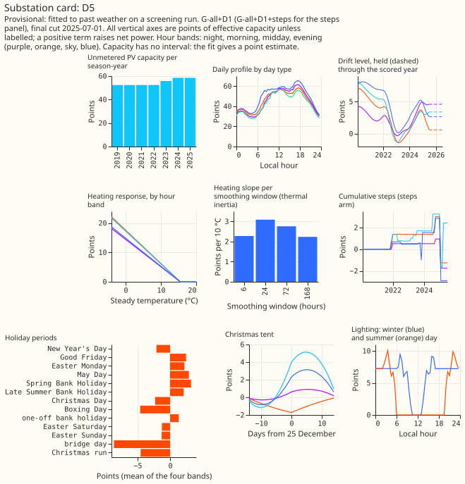
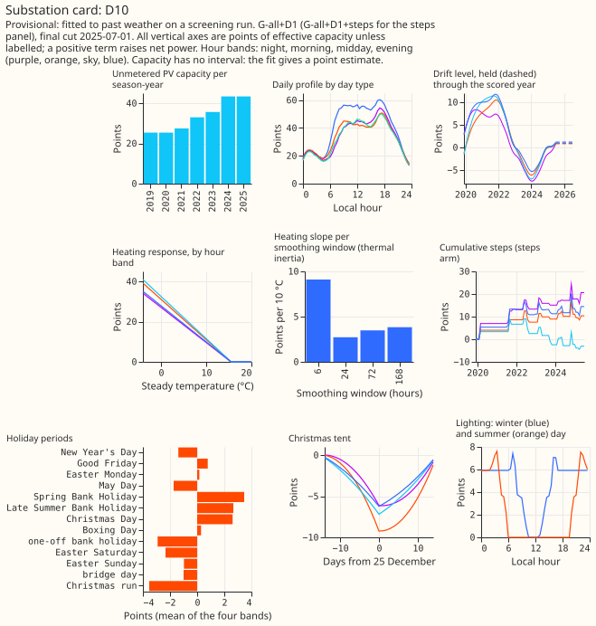
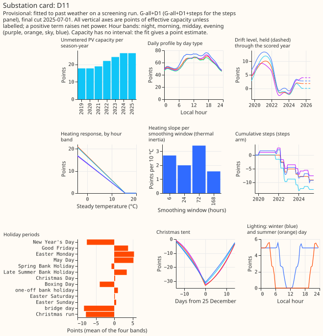
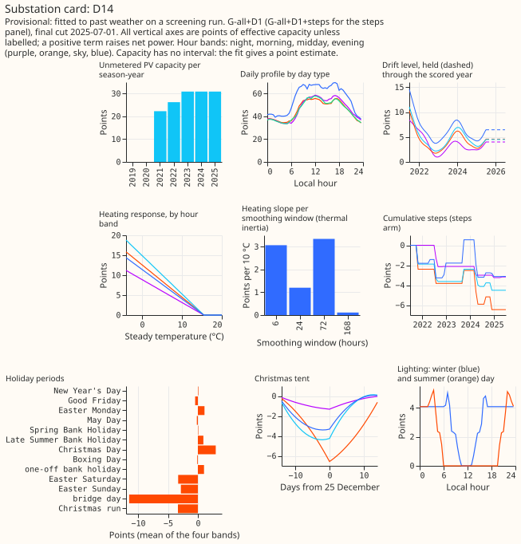
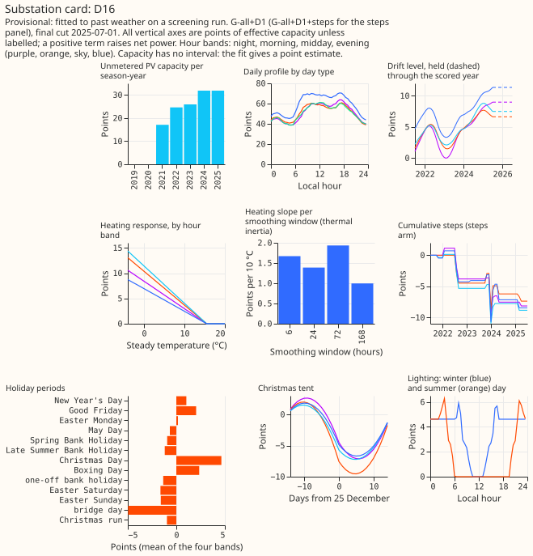
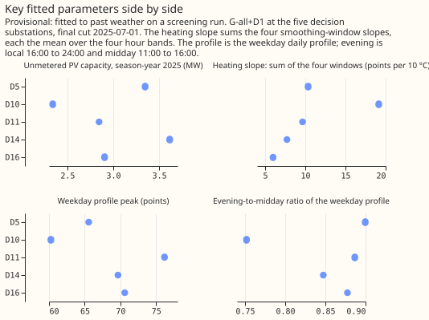
- What the cards show about the model's constraints. Each heating response is zero above 15.5 °C and rises as the temperature falls, the unmetered PV capacity never falls from one season-year to the next, and lighting is zero around midday. All three properties hold by construction (non-negative heating and capacity coefficients, and a lighting ramp that is zero at midday), so they check the plotting and not the fit.
- What differs between substations (comparison figure). D10 has the steepest heating response (a slope of about 19 points per 10 °C, against 6 to 10 elsewhere) and the lowest weekday profile peak (about 60 points, against 65 to 76). Fitted capacity runs from about 2.3 MW (D10) to 3.6 MW (D14), and the evening-to-midday ratio of the weekday profile from about 0.73 (D10) to 0.90 (D5). These are fitted values from one frozen fit each.
- Not shown. Capacity has no interval, the holiday panel averages the four hour bands, and the steps panel comes from a different fit (the steps arm).
Caveats
- ERA5 and CAMS are estimates of past weather and flatter the solar term; a production forecast uses forecast weather.
- The hand-filtered switching masks are hindsight labels shared by every arm. All-rows scores
(
report.txt) rank the arms the same way. - Each fit is held fixed for 12 months, so it is staler than a production model, which is refitted weekly. The spread is fitted on the year before the end of the training data, a year tuning also used, so it is slightly optimistic. The spread's centring assumes the replica year's mean bias does not carry into the scored year; the uncentred arm shows no systematic benefit from keeping it.
- The decision set is five substations and 12 months, so intervals are wide.
- The spread model changed after a first look at the results and an Opus code review (a replica
fit instead of quarter-by-quarter fits), so C1 to C3 here use a different spread from the one
pre-registered, and this experiment did not compute them under the pre-registered spread. The
centring was added after an audit of the first results (see Correction). The
post-hoc arms (
amq,ng,X-all,X-12amq) were also added after that look. The verdict rule is unchanged. - Penalties were tuned on one year; the drift step sits at the edge of its grid.
- Effective capacity is the project-wide constant per series used by every experiment.
What the next experiment should answer
Part 3 pools the model across substations on the GPU. A drift that re-estimates its level from recent data, for example by assimilating the latest observed demand, is one option for a later part. The corrected drift-by-month table says the existing drift helps in every scored month, but the tuning year reverses that, so the next question is whether drift and more years help in both years and in winter and summer alike. Part 3's pooling comparison should compare against G-all+D1, G1, and G-all+D1+steps, score the tuning year as a second frozen replicate, and split every contrast into November to March and April to October. Whether all years with drift beat 12 months remains open.